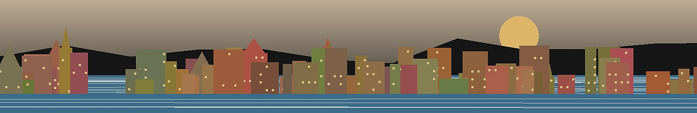

Historic Buildings as an Investment USP
Historic buildings can be operationally more complex than new developments, but in the right market they can create emotional value that modern apartments cannot copy.
TL;DR
- Historic architecture can be a guest-facing USP, not merely an old-building risk.
- The strongest product is often: historic shell, modern comfort.
- Original staircases, doors, mosaics, high ceilings and entrance halls can increase memorability.
- Risks remain real: lifts, roofs, facades, heating, pipes, special assessments and condominium politics.
- For Genova, old-building literacy is essential because the city’s character is inseparable from its built fabric.
Core concept
In many markets, investors are trained to prefer new construction because it is efficient, standardized and easier to maintain. That logic worked well in Gdańsk, where many candidate assets were modern developments. In older European cities, however, the building itself can become part of the experience. A staircase, a portal, a mosaic floor or a courtyard may communicate authenticity before the guest even enters the unit. This is not sentimentality; it is product differentiation.
The tourist lens
Residents often see old buildings through maintenance fatigue: no lift, old pipes, dark corridors, complicated ownership, slow condominium decisions. Tourists may see the same building through a different lens: atmosphere, history, locality and uniqueness. The investor must understand both perspectives at the same time. Romanticizing an old building is dangerous, but ignoring its emotional value is also a mistake.
The ideal formula
For short-term rental, the most attractive combination is often a characterful historic building with a renovated, reliable and comfortable interior: excellent bed, modern bathroom, strong Wi-Fi, clean kitchen, good lighting and professional photos. The building provides authenticity; the unit provides trust.
Due diligence for historic buildings
- Ask for recent and planned extraordinary works: roof, facade, lift, stairwell, pipes, electrical risers and structural issues.
- Check whether the staircase is charming or simply neglected. Guests can forgive patina more easily than dirt, bad smell or unsafe lighting.
- Understand heating: central, autonomous gas, electric, heat pump or older systems.
- Check noise transfer. Older buildings can have beautiful walls but poor acoustic separation.
- Study the condominium culture. Slow decision-making can be as important as physical condition.
Genova relevance
Genova makes this topic unavoidable. The city’s appeal is partly architectural: dense streets, palazzi, old port structures, hills, stairways and layered urban history. A flat that would look “old” in a modern resort may look authentic in Genova. But the operational burden also rises. The investor must learn to distinguish attractive patina from deferred maintenance.
P1 Insight
The shift from Gdańsk to Genova changed the evaluation lens. In Gdańsk, new-build quality, lobby, rooftop, gym, balcony and view dominated the analysis. In Genova, a building can be part of the guest promise. This expands the P1 scoring system: building character becomes a value driver, but only when paired with technical due diligence and modern interior standards.
- Request condominium minutes for at least the most recent annual meetings.
- Ask specifically about roof, facade, lift, stairs, electrical risers, water pipes and heating systems.
- Visit the staircase slowly: smell, lighting, cleanliness, mailbox area, wall cracks and neighbour signals.
- Test mobile signal and imagine self check-in at night.
- Estimate guest segment fit: romantic city break, family stay, long-term tenant or owner use.
Historic building checklist
The P1 insight is that “quality” is not one-dimensional. In Gdańsk, quality often meant new building, modern common areas, rooftop, balcony and efficient management. In Genova, quality may mean location, light, view, atmosphere and historic identity, provided the technical risk is controlled. The scoring system must adapt to the market rather than forcing every city into the same new-build template.
Historic buildings also affect guest segmentation. Young couples, cultural tourists and design-sensitive travellers may value authenticity. Families with strollers, elderly guests or business travellers with heavy luggage may prioritize lifts and easy access. The building therefore influences not only price but target market. A fifth-floor walk-up may be romantic for some guests and impossible for others. The listing strategy must be honest about this.
Due diligence in historic buildings should therefore focus on collective components. The apartment may be renovated, but the roof, facade, stairwell, lift, structural walls and shared systems belong to the building’s long-term cost story. In Italy, the condominio can decide on extraordinary works that materially change the investment economics. A low purchase price can be offset by a large special assessment. This is why the condominium minutes and planned works are not administrative details; they are core investment documents.
However, historic character must be curated. A beautiful staircase is an asset; a dirty staircase with bad lighting is a liability. A heavy old door is charming; a broken intercom is operational risk. High ceilings are attractive; poor heating can damage winter reviews. Investors should distinguish between aesthetic age and functional neglect. The former can create value. The latter creates cost.
For short-term rental, historic character can become part of the product because guests buy experiences. A guest in Genova may prefer a renovated flat inside an old palazzo over a perfectly efficient but generic unit. The building tells them they are in a real place. This is especially powerful when the interior provides modern comfort. The contrast between old shell and contemporary usability can be more memorable than a purely modern product.
Historic buildings create a tension between romance and risk. The romance is obvious: stone, wood, tiles, high ceilings, old doors, patina, urban memory. The risk is equally real: uncertain pipes, expensive facades, no lift, complex condominium decisions, acoustic issues and energy inefficiency. A professional investor cannot choose only one side of this story. The correct approach is to price the romance and investigate the risk.
Deep investment doctrine
Sources & further reading
- UNESCO World Heritage Centre — background on cultural and architectural heritage value.
- Agenzia delle Entrate — cadastral and property documentation context in Italy.
- Idealista Italy — market observation for historic apartment stock.